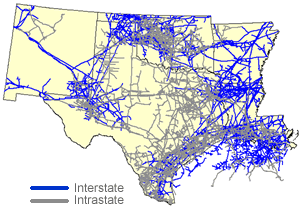

|
About U.S. Natural Gas Pipelines - Transporting Natural
Gas
based on data through 2007/2008 with selected updates |
|||||||||||||||||||||||||||||||||||||||||||||||||||||||||||||||||||||||||||||||||||||||||||||||||||||||||||||||||||||||||||||||||||||||||||||||||||||||||||||||||||||||||||||||||||||||||||||||||||||||||||||||||||||||||||||||||||||||||||||||||||||||||||||||||||||||||||||||||||||||||||||||||||||||||||||
|---|---|---|---|---|---|---|---|---|---|---|---|---|---|---|---|---|---|---|---|---|---|---|---|---|---|---|---|---|---|---|---|---|---|---|---|---|---|---|---|---|---|---|---|---|---|---|---|---|---|---|---|---|---|---|---|---|---|---|---|---|---|---|---|---|---|---|---|---|---|---|---|---|---|---|---|---|---|---|---|---|---|---|---|---|---|---|---|---|---|---|---|---|---|---|---|---|---|---|---|---|---|---|---|---|---|---|---|---|---|---|---|---|---|---|---|---|---|---|---|---|---|---|---|---|---|---|---|---|---|---|---|---|---|---|---|---|---|---|---|---|---|---|---|---|---|---|---|---|---|---|---|---|---|---|---|---|---|---|---|---|---|---|---|---|---|---|---|---|---|---|---|---|---|---|---|---|---|---|---|---|---|---|---|---|---|---|---|---|---|---|---|---|---|---|---|---|---|---|---|---|---|---|---|---|---|---|---|---|---|---|---|---|---|---|---|---|---|---|---|---|---|---|---|---|---|---|---|---|---|---|---|---|---|---|---|---|---|---|---|---|---|---|---|---|---|---|---|---|---|---|---|---|---|---|---|---|---|---|---|---|---|---|---|---|---|---|---|---|---|---|---|---|---|---|---|---|---|---|---|---|---|---|---|---|---|---|---|---|---|---|---|---|---|---|---|---|---|---|---|---|---|
|
Most of the major onshore interstate natural gas pipeline companies (see Table below) operating in the Southwest Region (Arkansas, Louisiana, New Mexico, Oklahoma, and Texas) are primarily exporters of the region's natural gas production to other parts of the country and Mexico, while an extensive Gulf of Mexico and intrastate natural gas pipeline network is the main conduit for deliveries within the region. More than 56,000 miles of natural gas pipeline on more than 66 intrastate natural gas pipeline systems (including offshore-to-onshore and offshore Gulf of Mexico pipelines) deliver natural gas to the region's local natural gas distribution companies and municipalities and to the many large industrial and electric power facilities located in the region. Some of the largest and oldest natural gas pipeline systems in the United States originate in the Southwest Region. During the 1930s, the first long-distance natural gas trunklines to serve the Midwest Region from the prolific Hugoton Basin located in the Texas/Oklahoma Panhandle were built. The initial section of the Panhandle Eastern Pipeline Company system reached as far east as central Indiana, although it did not yet extend into Michigan and provide exports of natural gas to Canada as it does today. [Map and Table of Import/Export Points] The initial version of the Natural Gas Pipeline Company of America system extended natural gas service to as far east as Chicago, Illinois, while that of the Northern Natural Gas Company pipeline extended north only into central Iowa and central Minnesota. Today these three systems have the capability to deliver a combined capacity of up to 4.0 billion cubic feet (Bcf) per day to delivery points in the Midwest and Central Regions of the country. Interstate natural gas pipeline service extended from the Southwest Region to the Northeast Region during the 1940s. The Texas Eastern Transmission Company system began its existence as two oil pipeline systems built in 1943, which were referred to as the "Big Inch" and "Little Big Inch" pipelines. These two systems, converted to natural gas in 1947, extended from Texas to the Midwest and eastward to New York/New Jersey. |
Southwest Region Natural Gas Pipeline Network

|
||||||||||||||||||||||||||||||||||||||||||||||||||||||||||||||||||||||||||||||||||||||||||||||||||||||||||||||||||||||||||||||||||||||||||||||||||||||||||||||||||||||||||||||||||||||||||||||||||||||||||||||||||||||||||||||||||||||||||||||||||||||||||||||||||||||||||||||||||||||||||||||||||||||||||||
The Tennessee Gas Pipeline Company system, which follows a more southerly route than the Texas Eastern system, was also built in the 1940s. It too was developed to supply natural gas to the Northeast, where production fields located in Appalachia (West Virginia, Pennsylvania, New York) were unable to meet the growing demand for natural gas in the region. Subsequently, the Transcontinental Gas Pipeline Company and Columbia Gulf Transmission Company systems also were built to meet the need for long-distance gas transportation between the Southwest and Northeast Regions. Several interstate natural gas pipeline systems originating in the Southwest also serve the Southeast Region’s coastal States. These include Florida Gas Transmission Company, Gulf South Pipeline Company, Southern Natural Gas Company (SONAT), and Transcontinental Gas Pipeline Company, with the latter extending its reach to the Northeast Region as well. The highly integrated natural gas pipeline network located on the Texas gulf coast and southern Louisiana is a mixture of intrastate natural gas pipelines with interconnections to the interstate network that also serve a large domestic natural gas industrial base and a growing natural gas fired electric generation market. The area has a web of natural gas pipeline linkages, a number of which have developed around several local natural gas market centers/hubs, the largest being the Carthage, Henry, and Egan hubs located in eastern Texas and southwestern Louisiana. Exiting this area of Louisiana, natural gas flows are basically directed either to the east (and to markets along the Atlantic and Gulf coasts and the Northeast Region), or northward through Mississippi, Tennessee, Kentucky, and eventually Illinois and other areas of the Midwest Region. In the latter case, several of the interstate natural gas pipeline companies using this south-to-north transportation corridor (ANR Pipeline Company, Midwestern Gas Transmission Company, Natural Gas Pipeline Company of America, Trunkline Gas Company, and Texas Gas Transmission Company) provide shippers and gas traders with transportation links between the three largest natural gas market centers in North America, the Perryville Hub in northern Louisiana, the Henry Hub in southern Louisiana, and the Chicago Hub in Illinois. Natural gas also flows into this south-to-north corridor from the East Texas/North Louisiana production basins and the Arkcoma/Anadarko basin of Oklahoma via natural gas pipelines such as the CenterPoint Gas Transmission Company and Ozark Transmission Company systems. Although large volumes of natural gas leave the Southwest Region for other regional markets, significant volumes still are consumed in the region. In 2008, the Southwest Region consumed more natural gas than any other region of the country, about double that of the next largest consuming region, the Midwest. Indeed, about one-third of the Nation's gas is consumed in the Southwest, in part, owing to the region’s high industrial demand for natural gas that has developed over the years because of the ease of access to the many prolific natural gas production fields located in the region. Only a few pipelines bring natural gas into the Southwest Region. About 4.9 Bcf per day of capacity (including import capacity from Mexico) enters the region compared with the 45 Bcf per day that exits it. One of the few is the Colorado Interstate Gas Company, which is expanding its development of coal-bed methane production in the Raton Basin of southeastern Colorado. Over the past several years (2000-2007) the company increased its natural gas pipeline capacity southeast into Oklahoma and into the Texas panhandle to about 0.6 Bcf per day, primarily to serve newly installed natural gas fired electric generation power plants in the area. The Southern Star Central Gas Pipeline Company (formerly Williams Gas Pipeline Central) system, with operations primarily in Kansas, also directs about 0.3 Bcf per day of natural gas pipeline capacity into the north central portion of Oklahoma. Another 2.2 Bcf per day of natural gas pipeline capacity entering the region represents capacity from the San Juan Basin and Piceance Basin of Colorado (Central Region) into New Mexico, most of which is redirected toward markets in Arizona and California through the El Paso Natural Gas Company, Transwestern Pipeline Company, and TransColorado Gas Transmission Company systems. The remaining entering capacity, for the most part, represents natural gas import capacity from Mexico (at bi-directional border crossings on the Texas Eastern Transmission Pipeline Company (0.4 Bcf per day), Tennessee Gas Pipeline Company (0.3 Bcf per day), and El Paso Natural Gas Pipeline Company (0.2 Bcf per day) systems), but also includes bi-directional operational flows among the natural gas pipelines that operate between the producing areas of Louisiana and Mississippi basins, such as the Gulf South Pipeline Company and Enbridge Pipelines (Mid-LA) LP systems. The Region’s Intrastate/Interstate Natural Gas Pipeline Network Association Is Crucial The market center/hub links provide transportation flexibility to natural gas shippers wishing to reach alternative markets. For example, the Guadalupe Pipeline Company (formerly TECO), and Energy Transfer LP's Oasis Pipeline systems provide transportation between west (WAHA hubs) and southeast Texas (Katy Hub), while the Atmos Pipeline--Texas Company (formerly TXU Lone Star), provides a similar service between the same WAHA hubs but to interconnections in northeast Texas (Carthage Hub). Shippers using the Enterprise Texas Intrastate Company system, the portion that was formerly Valero Transmission Company, can deliver to either the Katy or Carthage hubs from the WAHA area. In West Texas, in the Permian Basin (WAHA) area near the New Mexico border, intrastate natural gas systems (such as the Southern Union Intrastate Pipelines and the Oasis Pipeline Company) interconnect with the interstate network via the El Paso Natural Gas Company, Transwestern Pipeline Company, Natural Gas Pipeline Company of America and the Northern Natural Gas Company pipeline systems. The first two companies provide shippers access to Arizona and California markets, while the latter two provide transportation to Midwest markets. The El Paso Natural Gas Company and Transwestern Pipeline Company systems are also the principal sources of natural gas for the Pubic Service Company of New Mexico, the primary intrastate natural gas pipeline in New Mexico. In the eastern half of Texas, large intrastate natural gas pipelines such as Enbridge Pipelines (North Texas), Energy Transfer East Texas Pipeline, Crosstex Energy Services, Kinder Morgan Texas Pipeline, and Houston Pipeline Companies, provide area producers the opportunity to deliver their natural gas into the interstate network or to customers in major local natural gas consuming areas, such as the metropolitan Houston/Galveston area with its large petrochemical industrial complex. Several natural gas pipelines in the region, including Tennessee Gas Pipeline Company, Texas Eastern Transmission Comapny, Kinder Morgan Border Pipeline Company and the West Texas Gas Company, also provide intrastate shippers access to natural gas export points crossings to Mexico. In recent years, the expanding development of natural gas resources in the Barnett Shale area of the Fort Worth Basin in northeast Texas, as well as in the Boosier formation and Haynesville Shale areas that extend from the Texas/Louisiana border to northern Louisiana's Perryville area, has supported the installation of several new intrastate natural gas pipelines in the area and the expansion of others, in addition to new or expanded gathering systems. Developers such as intrastate pipelines Energy Transfer Partners LP and Crosstex Energy Services Company, and interstates such as Centerpoint Energy Transmission, are among the natural gas pipeline companies and joint ventures that have improved access to the interstate and intrastate natural gas transportation networks for producers operating in the growing Forth Worth Basin. In fact, in 2008 alone about 11 percent of all total natural gas pipeline capacity added in the United States, 4.6 Bcf/d, was built by Texas intrastate pipelines such as Energy Transfer Partners LP, Enbridge Pipelines Company, and Crosstex Energy Services to transport expanding Barnett shale and Boosier formation production to locals markets and to interconnections with the interstate natural gas pipeline network. In turn, several major interstate pipeline projects were also constructed to continue the flow of this natural gas beyond east Texas to interstate pipeline interconnections in Louisiana, Mississippi, and Alabama. These included the new Southeast Supply Header Pipeline (Louisiana to Alabama), the new Gulf South Southeast Extension (Mississippi to Alabama) and the Gulf South Texas to Mississippi Expansion, projects which added another 4.1 Bcf/d to interstate natural gas pipeline network in the Gulf Coast region. Gulf of Mexico Connections to Onshore Texas and Louisiana Twelve of the largest interstate natural gas systems in the Southwest Region also have operations in the Gulf of Mexico (see Table below), where they either transport natural gas from production platforms or they have interconnections to natural gas gathering systems which are networked to one or more producing platforms or leases. The latter case is characteristic of many of the interconnections that have developed over the past decade, where natural gas exploration and development has shifted into the deepwater portions of the Gulf. Consequently, a number of new high-capacity natural gas pipelines have been built to bring offshore production directly onshore from associated natural gas gathering operations. For example, the Independence Pipeline (1.0 Bcf per day), Discovery Gas Transmission system (0.6 Bcf per day), Destin Pipeline system (1.0 Bcf per day), and Nautilus Pipeline system (0.6 Bcf per day), each extend from far offshore to onshore interconnections with the existing interstate natural gas pipeline network. In many instances, natural gas production is fed into these offshore/onshore pipelines from large offshore gathering systems that were installed over the past 8 years (2000-2007) to support newer production fields developed in the deepwater. Among these are the East Breaks Gathering System, the Okeanos Deepwater System, the Constitution Pipeline, and the Cleopatra Gathering System. |
|||||||||||||||||||||||||||||||||||||||||||||||||||||||||||||||||||||||||||||||||||||||||||||||||||||||||||||||||||||||||||||||||||||||||||||||||||||||||||||||||||||||||||||||||||||||||||||||||||||||||||||||||||||||||||||||||||||||||||||||||||||||||||||||||||||||||||||||||||||||||||||||||||||||||||||
| Principal Natural Gas Pipeline Companies Serving the Southwest Region
with links to pipeline web sites
|
|||||||||||||||||||||||||||||||||||||||||||||||||||||||||||||||||||||||||||||||||||||||||||||||||||||||||||||||||||||||||||||||||||||||||||||||||||||||||||||||||||||||||||||||||||||||||||||||||||||||||||||||||||||||||||||||||||||||||||||||||||||||||||||||||||||||||||||||||||||||||||||||||||||||||||||
{kind=link}